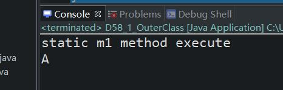
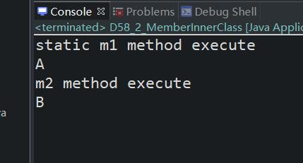

原文出处:本文由博客园博主心悦君兮君不知-睿提供。
原文连接:https://www.cnblogs.com/ruigege0000/p/12001390.html
原文连接:https://www.cnblogs.com/ruigege0000/p/12001390.html
一、内部类的分类：
（1）静态内部类（2）成员内部类（3）局部内部类（4）匿名内部类
二、静态内部类
1.静态内部类可以等同的看做是静态变量
内部类的重要作用：可以访问外部类中的私有数据
2.静态内部类可以直接访问外部类的静态变量，静态方法，无法直接访问成员变量和成员方法。
package com.bjpowernode.java_learning;
public class D58_1_OuterClass {
//静态变量
static String s1 = "A";
//成员变量
private String s2 = "B";
//静态方法
private static void m1() {
System.out.println("static m1 method execute");
}
//成员方法
private void m2() {
System.out.println("m2 method execute");
}
//静态内部类
//可以访问控制权限的修饰符修饰
//public,protected.private.缺省
static class InnerClass58{
//静态方法
public static void m3() {
m1();
System.out.println(s1);
// m2();
// System.out.println(s2);
}
//成员方法
public void m4() {
}
}
public static void main(String[] args) {
//执行m3
D58_1_OuterClass.InnerClass58.m3();
//执行m4
InnerClass58 inner = new InnerClass58();
inner.m4();
}
}二、成员内部类
1.成员内部类可以等同的看醉哦成员变量
2.成员内部类中不允许存在静态变量、静态方法、只能有成员变量和成员方法。
3.成员内部类可以有外部类的成员变量、成员方法、静态变量和静态方法。
4.注意点：内部类对象的创建方式：
需要先创建一个外部类的对象，然后利用外部类的对象再来创建内部类的对象，例如：
D58_2_MemberInnerClass d1 = new D58_2_MemberInnerClass();
InnerClass58_1 i1 = d1.new InnerClass58_1();//外部类对象加点的方式进行创建
i1.m4();
举一个完整的例子：
package com.bjpowernode.java_learning;
public class D58_2_MemberInnerClass {
//静态变量
static String s1 = "A";
//成员变量
private String s2 = "B";
//静态方法
private static void m1() {
System.out.println("static m1 method execute");
}
//成员方法
private void m2() {
System.out.println("m2 method execute");
}
//成员内部类
//可以访问控制权限的修饰符修饰
//public,protected.private.缺省
class InnerClass58_1{
//静态方法编译错误，不能使用这个方法
// public static void m3() {
// m1();
// System.out.println(s1);
//
// m2();
// System.out.println(s2);
//
// }
//成员方法
public void m4() {
m1();
System.out.println(s1);
m2();
System.out.println(s2);
}
}
public static void main(String[] args) {
D58_2_MemberInnerClass d1 = new D58_2_MemberInnerClass();
InnerClass58_1 i1 = d1.new InnerClass58_1();
i1.m4();
}
}

三、源码：
D58_1_OuterClass.java
D58_2_MemberInnerClass.java
地址：
https://github.com/ruigege66/Java/blob/master/D58_1_OuterClass.java
https://github.com/ruigege66/Java/blob/master/D58_2_MemberInnerClass.java
2.CSDN：https://blog.csdn.net/weixin_44630050（心悦君兮君不知-睿）
3.博客园：https://www.cnblogs.com/ruigege0000/
4.欢迎关注微信公众号：傅里叶变换，个人公众号，仅用于学习交流，后台回复”礼包“，获取大数据学习资料